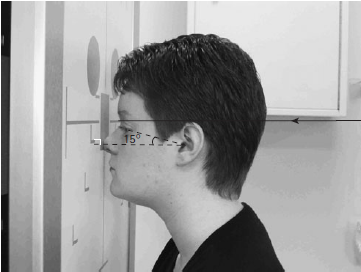

Paranasal Sinuses(Occipito-Frontal 15 degrees Caudad))
Centering point:The central ray is directed perpendicular to the vertical
Bucky along the median sagittal plane so the beam exits at
the nasion.
A collimation field or extension cone should be set to include
the ethmoidal and frontal sinuses. The size of the frontal
sinuses can vary drastically from one individual to another.

Cassette Size:24cm x 30cm (12 x 10 ins)
Potrait
Exposure Factors:75kVp on
20mAs
FFD:100cm
Bucky/Grid:Moving or Stationary Grid
Filter:No
Collimation:Collimate to include the sinuses
Pathologies:fluid in sinuses
Position of patient and cassette
- The patient is seated facing the vertical Bucky or skull unit
cassette holder so the median sagittal plane is coincident with
the midline of the Bucky and is also perpendicular to it.
- The head is positioned so that the orbito-meatal baseline is
raised 15 degrees to the horizontal.
- Ensure that the nasion is positioned in the centre of the Bucky.
- The patient may place the palms of each hand either side of
the head (out of the primary beam) for stability.
- An 18 � 24-cm cassette is placed longitudinally in the Bucky
tray. The lead name blocker must not interfere with the final
image.